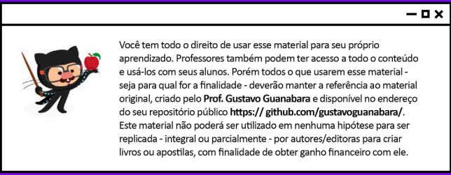

Sem dúvidas as cores são muito poderosas, como pudemos conferir no capítulo anterior. Mas em conjunto com elas, temos as fontes, que são um ótimo recurso visual para criar a identidade da página e mostrar a ideia que queremos passar com o nosso desing. Vamos aprender um pouco mais sobre fontes e como aplicá-las aos nossos sites. Venha comigo.
